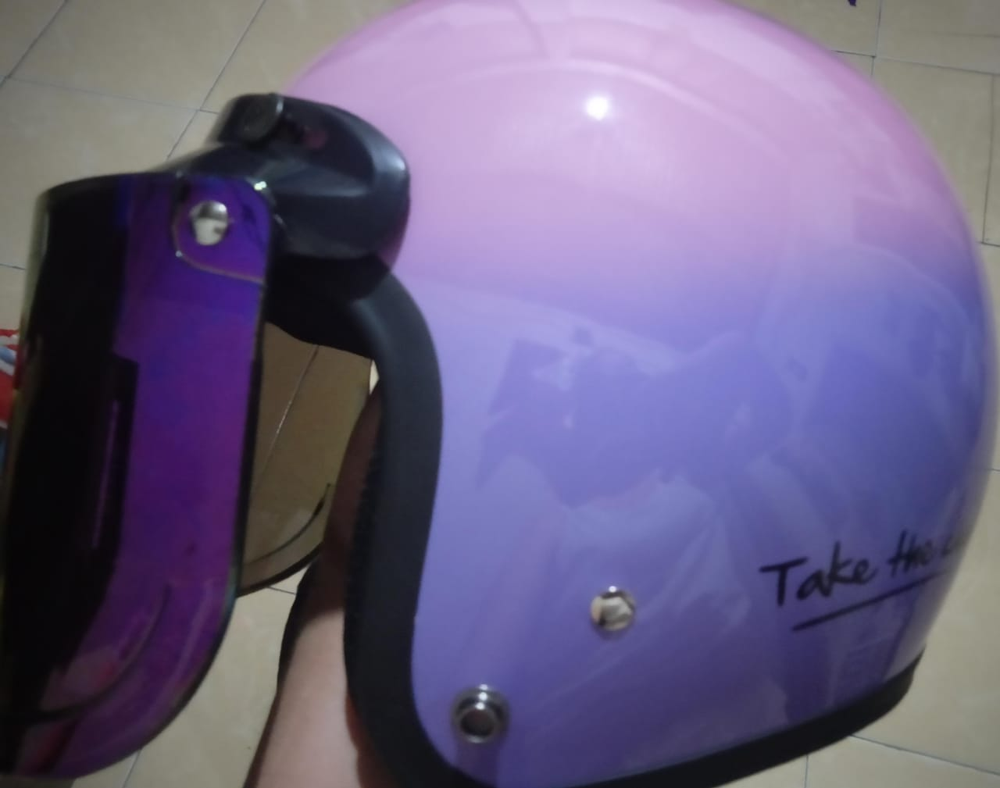
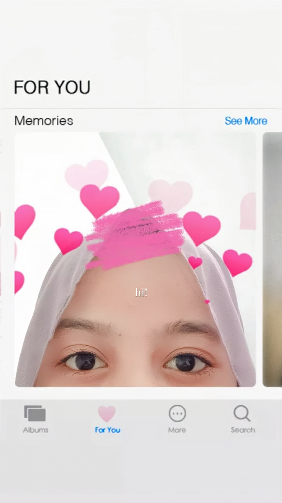
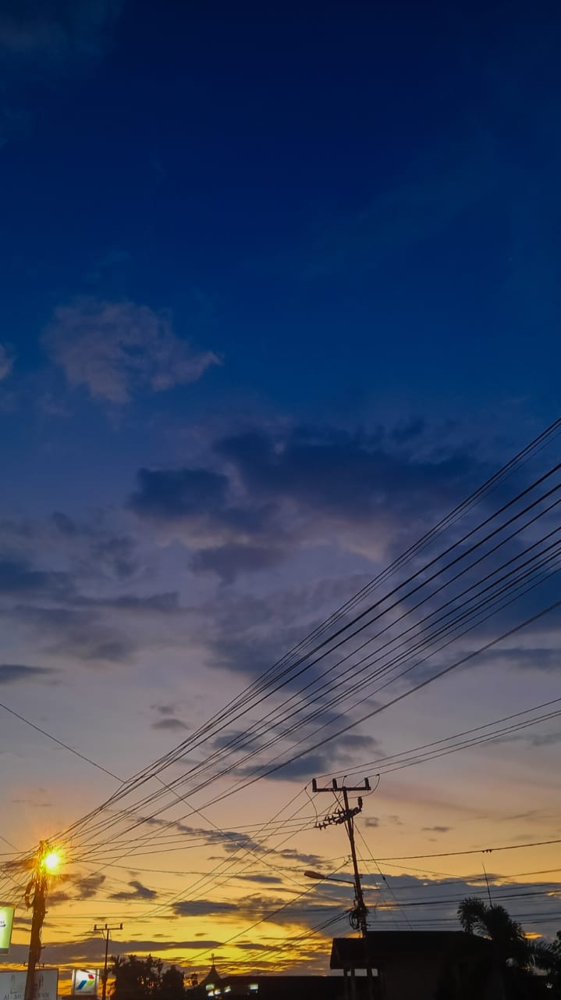
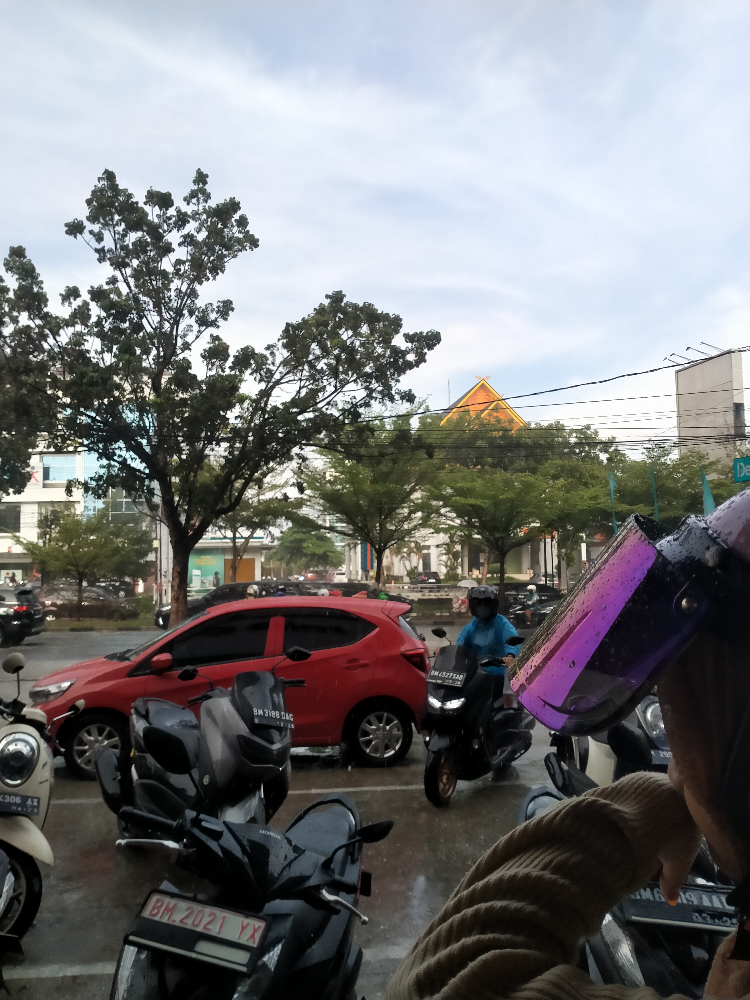
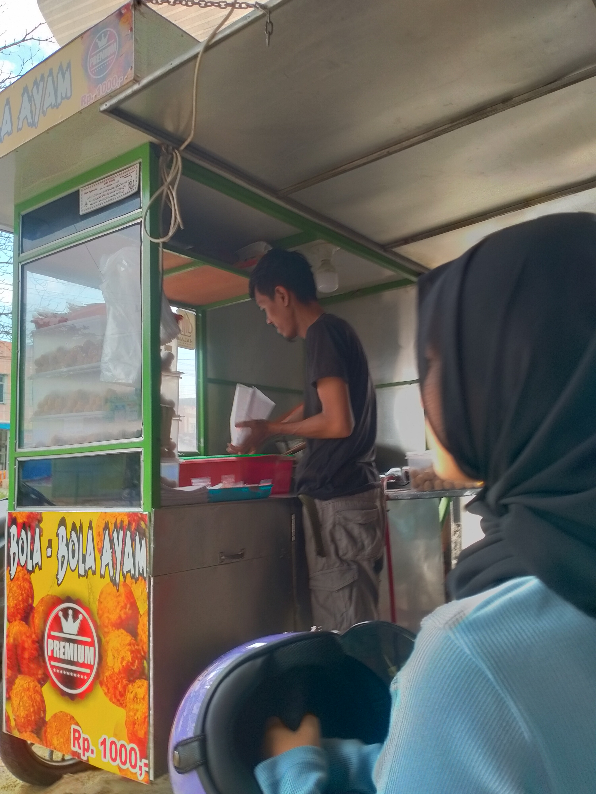
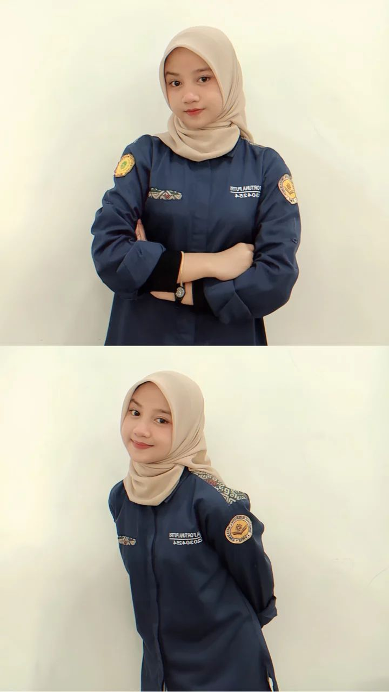
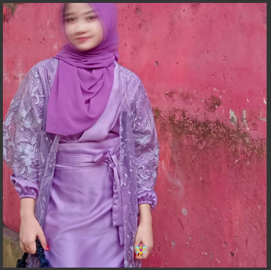
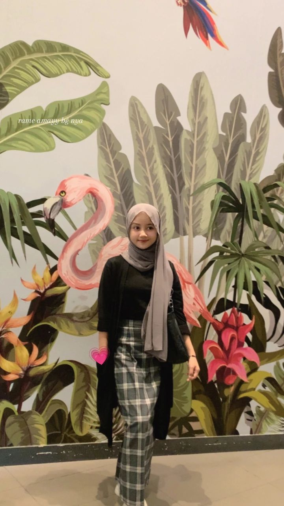

8 PM, Summer
3 PM, Winter
10 AM, Summer Storm

5 PM, Autumn
7 PM, Spring

6:30 AM, Summer
6 AM, Autumn

5 PM, Summer

11 AM, Summer
2 PM, Spring Rainbow

4 AM, Autumn

5 PM, Rainy
12 AM, Summer
14 PM, Fall
4 PM, Autumn

4 PM, Spring